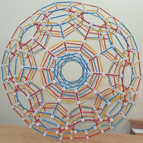

|  | Zometool 120-cells in BeninFrank Sottile, Tuesday 17 May 2016In follow-up activities to lectures on "Platonic solids in the next dimension", in my trip to Institut de Mathématiques et de Sciences Physiques in Porto-Nuovo, Benin, I worked with seven students in their cours préparatoire to build a projection of the 120-cell in R3. From left to right in the second picture below, they are, Hans Atacle, Florent Koudohode, Harlem-Desir Adjagba, Sorel Edgard Lokossou, A. Anthony Adanho, Kenneth Assogba, T. Ines Hounkonnou. |